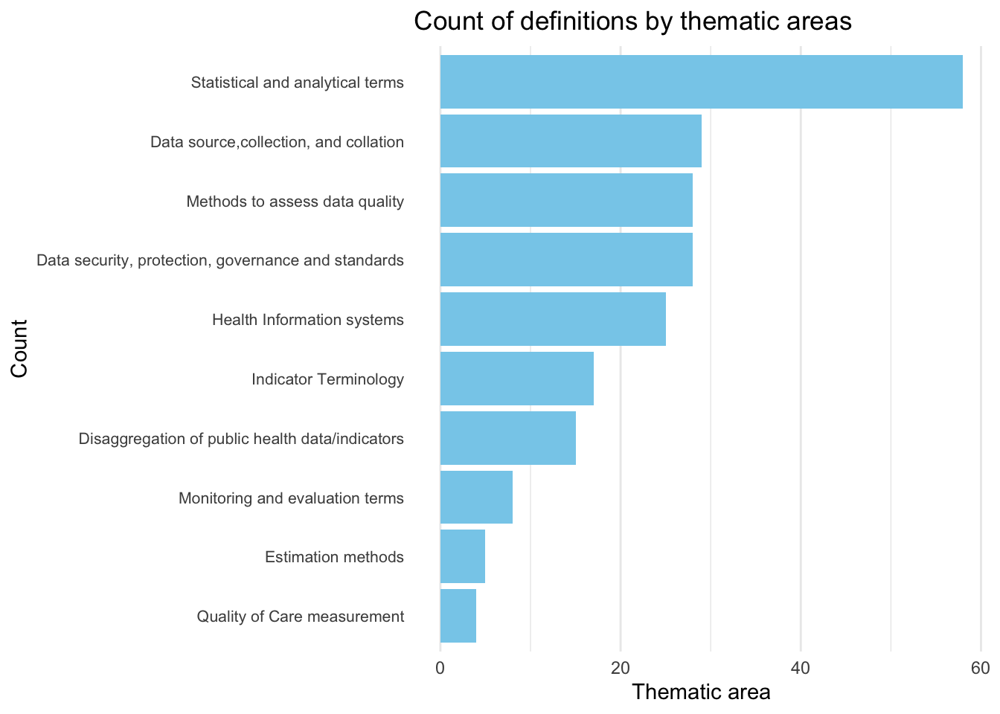
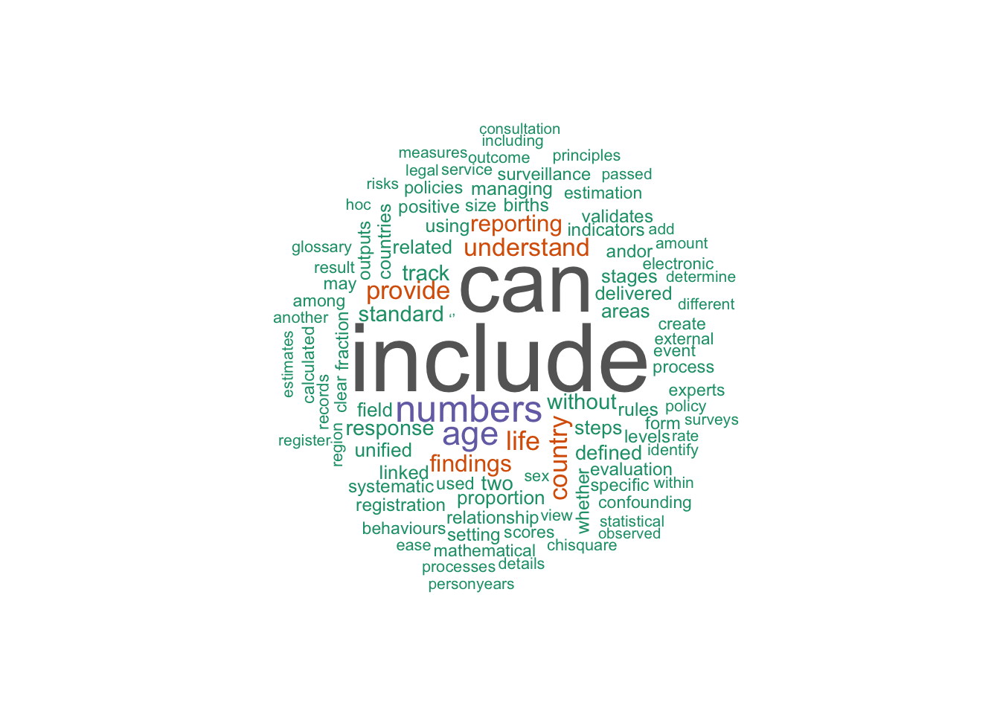

The goal of glossarywho is to provide data from the WHO Glossary in a tidy format.
Installation
You can install the development version of glossarywho from GitHub with:
# install.packages("devtools")
devtools::install_github("openwashdata/glossarywho")
## Run the following code in console if you don't have the packages
## install.packages(c("dplyr", "knitr", "readr", "stringr", "gt", "kableExtra"))
library(dplyr)
library(knitr)
library(readr)
library(stringr)
library(gt)
library(kableExtra)Alternatively, you can download the individual datasets as a CSV or XLSX file from the table below.
- Click Download CSV. A window opens that displays the CSV in your browser.
- Right-click anywhere inside the window and select “Save Page As…”.
- Save the file in a folder of your choice.
| dataset | CSV | XLSX |
|---|---|---|
| definitions | Download CSV | Download XLSX |
| themes | Download CSV | Download XLSX |
Data
The package provides access to glossary terms, definitions and thematic areas from the WHO Glossary. The datasets are: themes and definitions.
definitions
The dataset definitions contains data about definitions from the WHO glossary It has 207 observations and 2 variables
definitions |>
head(3) |>
gt::gt() |>
gt::as_raw_html()| Term | Description |
|---|---|
themes
The dataset themes contains data about thematic areas from the WHO glossary. It has 217 observations and 2 variables
themes |>
head(3) |>
gt::gt() |>
gt::as_raw_html()| Thematic Area | Term |
|---|---|
For an overview of the variable names, see the following table.
| variable_name | variable_type | description |
|---|---|---|
| Term | character | Term in the Glossary |
| Description | character | Description of the term |
Example
library(glossarywho)
library(ggplot2)
library(tidyverse)
# Plot a bar chart of count of definitions by thematic areas
themes |>
count(`Thematic Area`) |>
ggplot2::ggplot(aes(x = fct_reorder(`Thematic Area`, n), y = n)) +
geom_col(fill = "skyblue") +
coord_flip() +
labs(title = "Count of definitions by thematic areas",
x = "Count",
y = "Thematic area") +
theme_minimal() +
theme(axis.text.y = element_text(size = 8)) +
theme(panel.grid.major.y = element_blank(),
panel.grid.minor.y = element_blank())
# Wordcloud of most common words from definitions
library(wordcloud)
library(tm)
# Create a corpus
corpus <- Corpus(VectorSource(definitions$Description))
# Clean the corpus
corpus <- tm_map(corpus, content_transformer(tolower))
corpus <- tm_map(corpus, removePunctuation)
corpus <- tm_map(corpus, removeNumbers)
corpus <- tm_map(corpus, removeWords, stopwords("en"))
corpus <- tm_map(corpus, stripWhitespace)
# Create a document term matrix
dtm <- DocumentTermMatrix(corpus)
# Create a wordcloud
wordcloud(words = names(sort(colSums(as.matrix(dtm)), decreasing = TRUE)),
freq = colSums(as.matrix(dtm)),
min.freq = 1,
max.words = 100,
random.order = FALSE,
colors = brewer.pal(8, "Dark2"))
License
Data are available as CC-BY.
Citation
Please cite this package using:
citation("glossarywho")
#> To cite package 'glossarywho' in publications use:
#>
#> Dubey Y (2025). "glossarywho: WHO Glossary."
#> doi:10.5281/zenodo.14754017
#> <https://doi.org/10.5281/zenodo.14754017>,
#> <https://github.com/openwashdata/glossarywho>.
#>
#> A BibTeX entry for LaTeX users is
#>
#> @Misc{dubey:2025,
#> title = {glossarywho: WHO Glossary},
#> author = {Yash Dubey},
#> year = {2025},
#> doi = {10.5281/zenodo.14754017},
#> url = {https://github.com/openwashdata/glossarywho},
#> abstract = {This package provides access to a tidy version of the WHO Glossary (https://www.who.int/publications/i/item/9789240105485) and thematic areas for each term.},
#> version = {0.1.0},
#> }